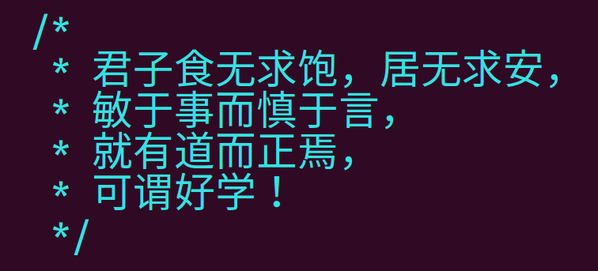

|
|
Ju Chen
- Ph.D. student in Computer Science (CV)
- Department of CSE
- University of California, Riverside
- Email: jchen757@ucr.edu
- Phone: (585) 434-8060
|

|
What's new
- 09/04/2019: I am currently visiting University of California, Riverside, working on research topics of computer security, supervised by Professor Heng Yin and Professor Chengyu Song
- 08/23/2019: I finished my internship at "Baidu X-lab. Checkout the MesaTee project!
|
Research
- Research Interests: Trusted Execution Environment (e.g. Intel SGX) and Blockchain
|
Teaching
- 2017 Spring: CIS655/CSE699, Advanced Computer Architecture
- 2018 Fall: CIS600/FIN600, Blockchain and Cryptocurrency
|
Publication
-
Qiwu Zou, Yuzhe Tang, Ju Chen, Kai Li, Charles Kamoua, Kevin Kwiat, Laurent Njilla. "ChainFS: Blockchain-Secured Cloud Storage", IEEE Cloud 2018
-
K. Areekijsereeree, Ju Chen, Yuzhe Tang, Shuang Wang, Arun Iyengar and B. Palanisamy. "Secure and Efficient Multi-Party Directory Publication for Privacy-Preserving Data Sharing." SecureComm 2018, AR=30.6%
-
Yuzhe (Richard) Tang, Zihao Xing, Ju Chen, Cheng Xu and Jianliang Xu. ”Lightweight Logging over the Blockchain for Data-Intensive Applications”, 2nd Workshop on Trusted Smart Contracts 2018 at Financial Cryptography (Workshop paper)
-
Ju Chen, Yuzhe (Richard) Tang and Hao Zhou. ”Strongly Secure and Efficient Data Shuffle on Hardware Enclaves”, SysTex 2017 at ACM SOSP (Workshop paper)
-
John Ye, Jason Chen, Tianzhou Chen and Qinsong Shi, ”Conflict-Free Code Block Scheduling to Hide SpMT Inter-Core Register Sync Delay”, PDCAT ’14
-
John Ye, Jason Chen, Tianzhou Chen, Minghui Wu and Li Liu, ”Offline Data Dependence Analysis to Facilitate Runtime Parallelism Extraction”, CSE ’14
-
Ju Chen, Qi Zhao and Jinming Dong, ”Research on kernel encoding function of H.264 CODEC JM8.6”, Computer Engineering and Design 2008-17 [pdf]
|
Awards
- iDash 2017 Student Travel Grant
- Conference (sub)reviewer: TKDE, ICPADS, TDSCSI, IPDPS and IEEE cloud
|
Software
- 2016: Trustworthy key-value store based on LevelDB using SGX
- 2015: Intel SGX emulator (GitHub repo)
- 2009-2010, 2013-2015: Display drivers for Intel integrated graphics card (Source Code)
- 2012: Android application to demostrate Wi-Fi direct(Wi-Fi direct)
- 2011: USB-over-IP protocol via Windows Device Drivers
- 2008: USB gadget driver for Intel's platform
- 2007: Instrument test automation tools for Agilent Instruments
|
Industry
|